Oneprovider installation tutorial
This section describes the steps needed to install and configure Oneprovider service in production, either using Docker images or directly using our packages. In order to deploy Oneprovider, it must be connected during startup to an existing Onezone installation.
Installation
Oneprovider can be deployed using our official Docker images on any Linux OS supporting Docker or using packages that we provide for Ubuntu Xenial and CentOS 7). Docker based deployment is the recommended setup due to minimal requirements and best portability.
Oneprovider service can be deployed on multiple nodes for high-availability purpose, in such case either the Docker setup or the packages need to be installed on all nodes where the Oneprovider should be deployed. This tutorial assumes Oneprovider will be installed on a single node.
Prerequisites
In order to ensure optimum performance of the Oneprovider service, several low-level settings need to be tuned on the host machine. This applies to both Docker based as well as package based installations, in particular to nodes where Couchbase database instance are deployed.
After these settings are modified, the machine needs to be rebooted.
Increase maximum number of opened files
In order to install Oneprovider service on one of the supported operating systems, first make sure that the maximum limit of opened files is sufficient (preferably 63536, but below /proc/sys/fs/file-max). The limit can be checked using:
ulimit -n
1024
If necessary, increase the limit using:
$ sudo sh -c 'echo "* soft nofile 63536" >> /etc/security/limits.conf'
$ sudo sh -c 'echo "* hard nofile 63536" >> /etc/security/limits.conf'
It might be also necessary to setup the limit in /etc/systemd/system.conf:
sudo sh -c 'echo DefaultLimitNOFILE=65536 >> /etc/systemd/system.conf' sudo systemctl daemon-reexec
Swap preference settings
Make sure that the swap preference (i.e. swappiness) is set to 0 (or at most 1 - see here for details):
$ cat /proc/sys/vm/swappiness
60
and if necessary decrease it using:
$ sudo sh -c 'echo "vm.swappiness=0" >> /etc/sysctl.d/50-swappiness.conf'
Disable Transparent Huge Pages feature
By default, many Linux machines have the Transparent Huge Pages feature enabled, which somehwat improves performance of machines running multiple application at once (e.g. desktop operation systems), however it deteriorates the performance of most database-heavy applications, such as Oneprovider.
These settings can be checked using the following commands (the output shown below presents the expected settings):
$ cat /sys/kernel/mm/transparent_hugepage/enabled
always madvise [never]
$ cat /sys/kernel/mm/transparent_hugepage/defrag
always madvise [never]
If any of the settings is different than the above, they should be changed permanently, which can be achieved for instance by creating a simple systemd unit file /etc/systemd/system/disable-thp.service:
[Unit]
Description=Disable Transparent Huge Pages
[Service]
Type=oneshot
ExecStart=/bin/sh -c "/bin/echo 'never' | /usr/bin/tee /sys/kernel/mm/transparent_hugepage/enabled"
ExecStart=/bin/sh -c "/bin/echo 'never' | /usr/bin/tee /sys/kernel/mm/transparent_hugepage/defrag"
[Install]
WantedBy=multi-user.target
and enabling it on system startup using:
$ sudo systemctl enable disable-thp.service
$ sudo systemctl start disable-thp.service
Node hostname
Make sure that the machine has a resolvable, domain-style hostname (it can be Fully Qualified Domain Name or just a proper entry in /etc/hostname and /etc/hosts) - for this tutorial it is set to oneprovider-example.com.
Following command examples assumes an environment variable ONEPROVIDER_HOST is available, for instance:
$ export ONEPROVIDER_HOST="oneprovider-example.com"
Python
Make sure that python 2.x is installed on the machine. For example:
$ python -V
Python 2.7.12
Onedatify based setup
The easiest way to deploy Oneprovider is using Onedatify. The deployment procedure is described here.
Docker based setup
Oneprovider installation using Docker is very straightforward. This type of deployment requires that docker and docker-compose are installed on your server.
Customizing Oneprovider Docker Compose script
In case of Docker based deployment all configuration information needed to install Oneprovider can be included directly in the Docker Compose script. This tutorial assumes that all Oneprovider configuration and log files will be stored in the directory /opt/onedata/oneprovider on the host machine, but you can use any directory to which Docker has access to. Make sure the partition where the /opt directory is mounted has at least 20GB of free space for logs and database files. For large systems with large numbers of files (>1M files) the space should be much bigger. Also consider setting up the persistence directory on a separate partition with backup.
The following assumes you have prepared the following directory structure:
$ sudo mkdir -p /opt/onedata/oneprovider
$ sudo mkdir /opt/onedata/oneprovider/certs
$ sudo mkdir /opt/onedata/oneprovider/persistence
Create the following Docker Compose file in /opt/onedata/oneprovider/docker-compose.yml:
version: '2.0'
services:
node1.oneprovider.localhost:
# Oneprovider Docker image version
image: onedata/oneprovider:21.02.1
# Hostname (in this case the hostname inside Docker network)
hostname: node1.oneprovider.localhost
# dns: 8.8.8.8 # Optional, in case Docker containers have no DNS access
# Host network mode is preferred, but on some systems may not work (e.g. CentOS)
# To use bridge network
network_mode: host
# Friendly name of the Oneprovider Docker container
container_name: oneprovider-1
# Mapping of volumes to Oneprovider container
volumes:
- "/var/run/docker.sock:/var/run/docker.sock"
# Oneprovider runtime files
- "/opt/onedata/oneprovider/persistence:/volumes/persistence"
# Data storage directories
- "/mnt/nfs:/volumes/storage"
# Additional, trusted CA certificates (all files from this directory will be added)
- "/opt/onedata/oneprovider/cacerts:/etc/op_worker/cacerts"
# Uncoment lines below if you disabled the built-in Let's Encrypt client
## SSL certificate
#- "/opt/onedata/oneprovider/certs/cert.pem:/etc/op_panel/certs/web_cert.pem"
## SSL certificate key
#- "/opt/onedata/oneprovider/certs/key.pem:/etc/op_panel/certs/web_key.pem"
## Certificate chain for the TLS certificate above
#- "/opt/onedata/oneprovider/certs/cacert.pem:/etc/op_panel/certs/web_chain.pem"
# Expose the necessary ports from Oneprovider container to the host
# This section can be commented when using host mode networking
ports:
- "80:80"
- "443:443"
- "6665:6665"
- "9443:9443"
environment:
# Force Onepanel to read configuration from environment variable
ONEPANEL_BATCH_MODE: "true"
# Provide initial Oneprovider configuration for Onepanel in environment variable
ONEPROVIDER_CONFIG: |
# Cluster configuration allows to specify distribution of Oneprovider
# components over multiple nodes - here we deploy entire service on
# a single node
cluster:
# Domain name of the provider within Docker network, will be appended
# to all nodes specified below
domainName: "oneprovider.localhost"
autoDeploy: true
nodes:
n1:
hostname: "node1"
managers:
mainNode: "n1"
nodes:
- "n1"
workers:
nodes:
- "n1"
databases:
# Per node Couchbase cache size in MB for all buckets
serverQuota: 4096
# Per bucket Couchbase cache size in MB across the cluster
bucketQuota: 4096
nodes:
- "n1"
storages:
# Add initial storage resource (optional - can be added later)
# In this example NFS mounted at /mnt/nfs on the host, which is
# mounted to /volumes/storage directory inside Docker container
NFS:
type: "posix"
mountPoint: "/volumes/storage"
oneprovider:
geoLatitude: 50.0646501
geoLongitude: 19.9449799
register: true
name: "ONEPROVIDER-DEMO"
adminEmail: "admin@oneprovider-example.tk"
# Use built-in Let's Encrypt client to obtain and renew certificates
letsEncryptEnabled: true
# Automatically register this Oneprovider in Onezone without subdomain delegation
subdomainDelegation: false
domain: "oneprovider-example.tk"
# Alternatively:
## Automatically register this Oneprovider in Onezone with subdomain delegation
# subdomainDelegation: true
# subdomain: oneprovider-example # Domain will be "oneprovider-example.onezone-example.tk"
onezone:
# Address of the Onezone at which this Oneprovider will register
domainName: "onezone-example.tk"
onepanel:
# Create initially 1 administrator and 1 regular user
users:
"admin":
password: "password"
userRole: "admin"
"user":
password: "password"
userRole: "regular"
To install the necessary Docker images on the machine run:
$ docker-compose -f /opt/onedata/oneprovider/docker-compose.yml pull
Installation from distribution packages
The following instructions are based on Ubuntu Xenial.
Package installation
Now in order to install Oneprovider service, it should be enough to execute our install script, which automatically detects operating system version, adds our repository and installs required packages:
$ curl -sS http://get.onedata.org/oneprovider.sh | bash
Alternatively, the necessary packages can be installed manually:
# Add Onedata package repository
$ sudo sh -c 'curl -sSL http://packages.onedata.org/onedata.gpg.key | apt-key add -'
$ sudo sh -c 'echo "deb http://packages.onedata.org/apt/ubuntu/xenial xenial main" > /etc/apt/sources.list.d/onedata.list'
$ sudo sh -c 'echo "deb-src http://packages.onedata.org/apt/ubuntu/xenial xenial main" >> /etc/apt/sources.list.d/onedata.list'
# Update package list
$ sudo apt update
# Install packages
$ export ONEPANEL_AUTOSTART=false # Disable automatic Onepanel start
$ sudo apt install op-panel
$ sudo apt install cluster-manager
$ sudo apt install op-worker
$ sudo apt install couchbase-server-community
$ sudo apt install oneprovider
Sometimes Couchbase service fails to start automatically during installation, in such case it has to be restarted manually using
$ sudo systemctl restart couchbase-server.serviceand then install Oneprovider again$ sudo apt install oneprovider
Configuration
Setting up certificates
Since release 18.02.0-beta5, Oneprovider supports automatic certificate management backed by Let's Encrypt. To use this option, it is only necessary to enable this feature in Oneprovider Docker Compose configuration file (see above) or via GUI.
If you prefer to obtain and install certificates for Oneprovider service manually, modify the Docker Compose file to mount PEM files inside the container using paths listed in TLS certificate management.
Security and recommended firewall settings
Oneprovider service requires several TCP ports (80,443,6665,9443) to be opened for proper operation. Some of these ports can be limited to internal network, in particular 9443 for Onepanel management interface. For more details on these ports see here.
Furthermore, on all nodes of Oneprovider deployment where Couchbase instance is deployed, it exposes several additional ports. This means that the Couchbase security guidelines should be also followed.
For more information about ports setup see Firewal setup
Cluster configuration for package based deployment
This tutorial assumed that the cluster configuration is provided directly in the Docker Compose file. However for package based installation the cluster configuration has to be performed separately. It can be done using the Onepanel web based interface. Onepanel administration service is automatically started after installation and can be accessed from https://oneprovider-example.tk:9443 port to configure Oneprovider instance. In case it was not started properly, it can be restarted using systemctl command:
$ sudo systemctl restart op_panel.service
Open https://oneprovider-example.tks:9443 using any web browser and continue through the following steps:
Login using default credentials specified in (e.g.
admin:password)
Initialize the cluster setup
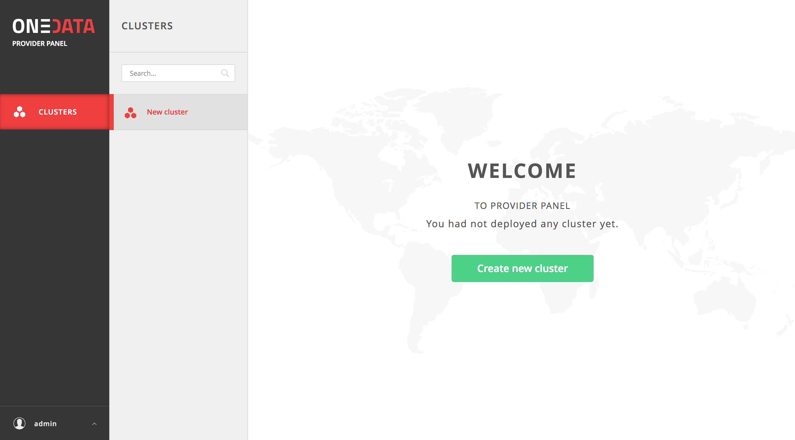
Select hosts in the cluster which will have specific roles (leave as is)
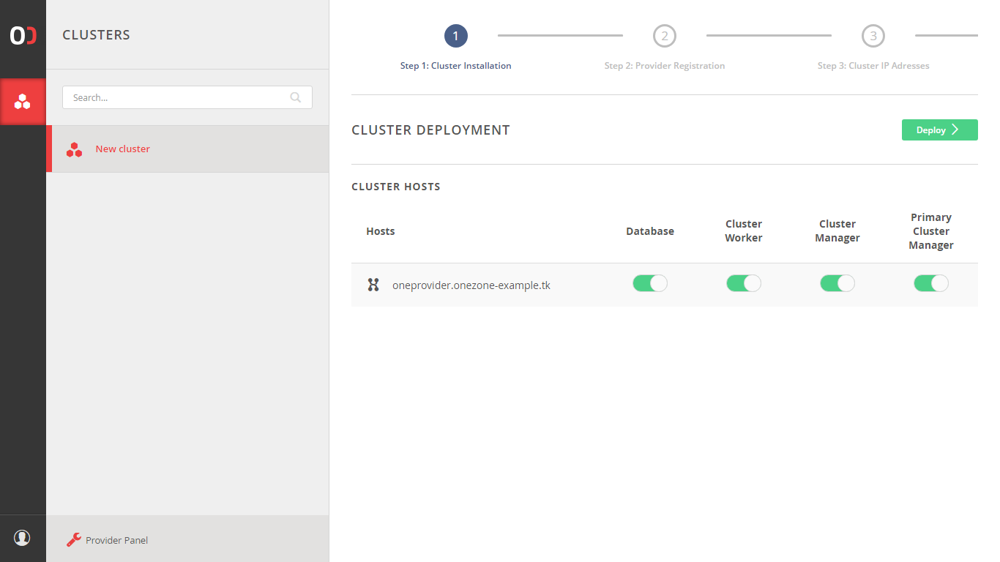
Provide Onezone details including subdomain delegation request
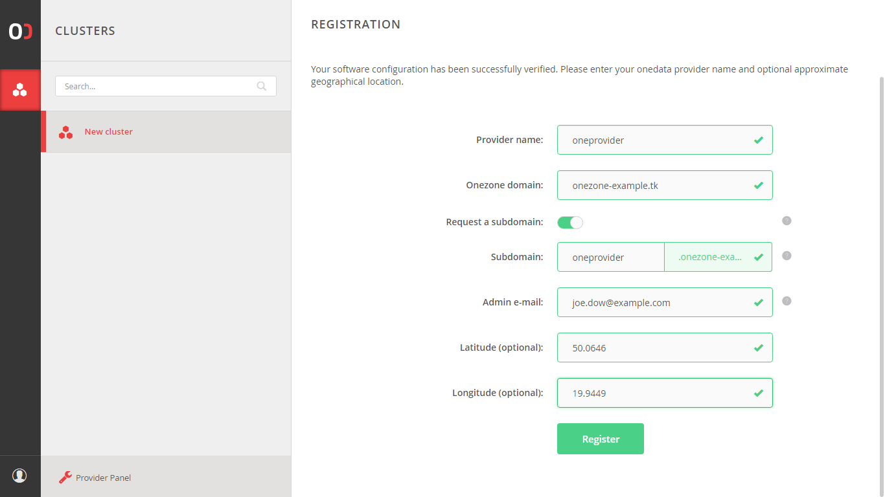
Provide the external IP address of the Oneprovider cluster and click "Setup IP address".
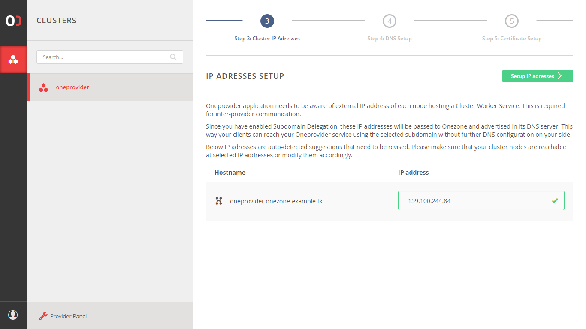
Check the DNS settings and click "Perform check". If it fails then check that the DNS records, which are displayed exists.
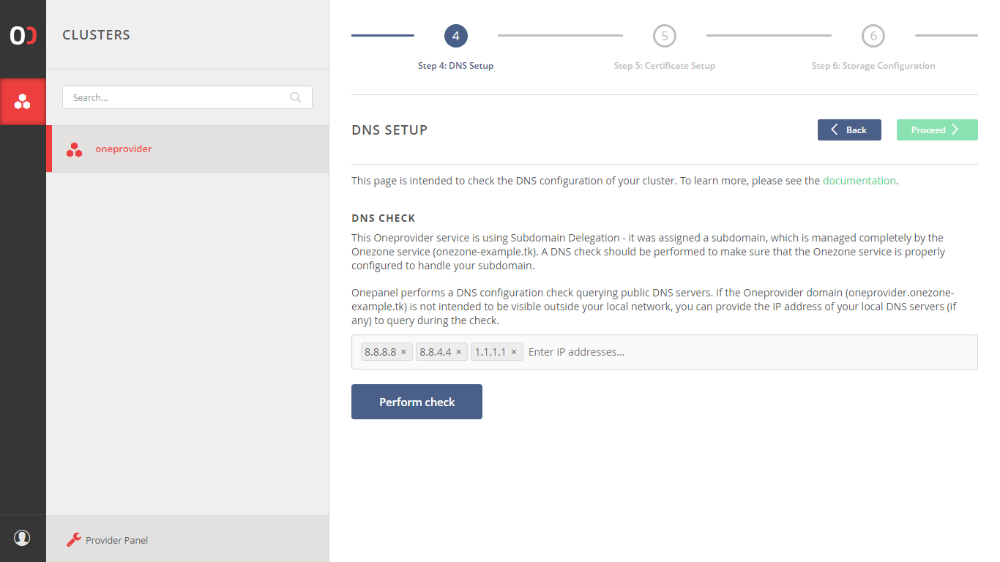
Click "Proceed" when the DNS check succeeds.
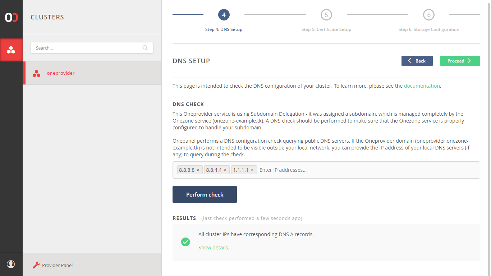
Click "Obtain certificate" to automatically obtain a web certificate from Let's encrypt.
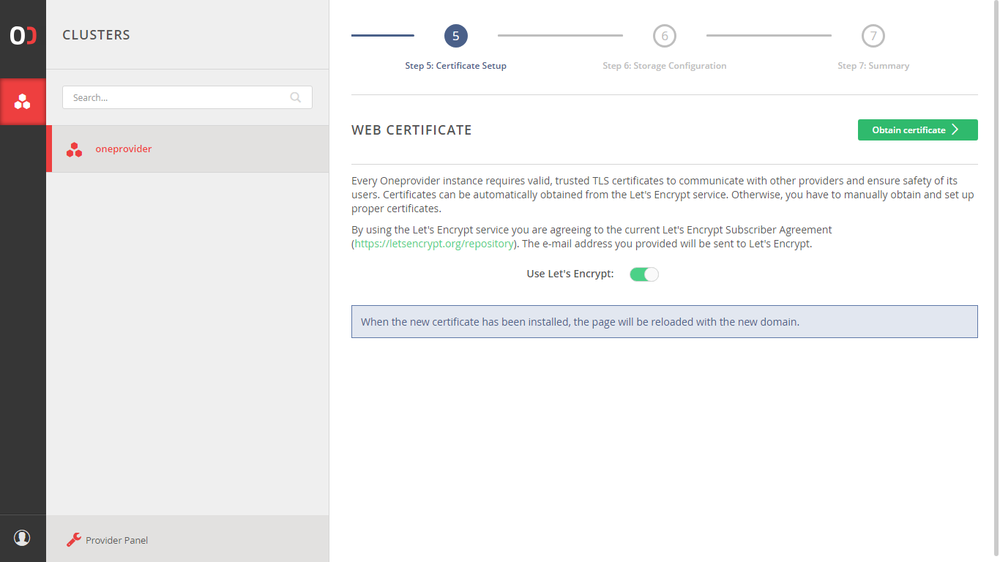
Add storage
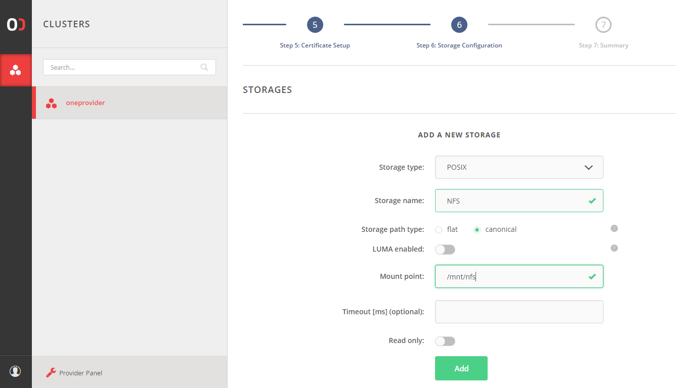
Verify the storage was added successfully and click "Finish".
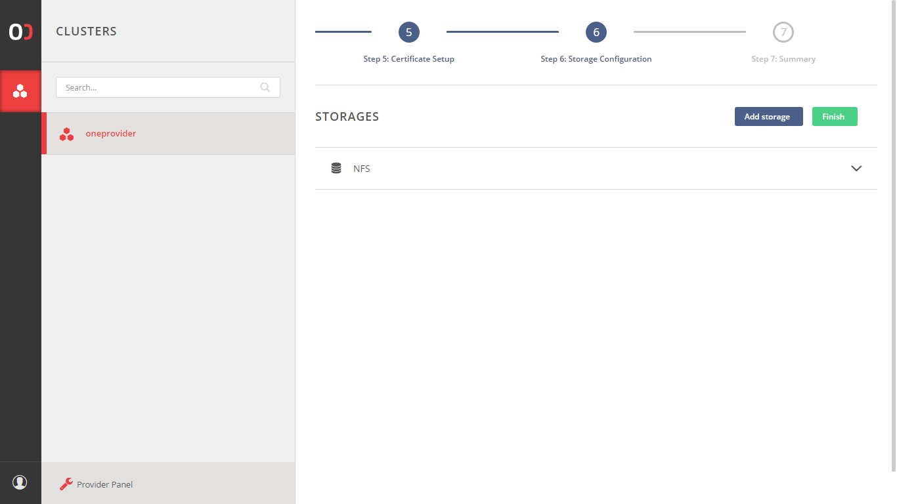
Wait for registration and deployment to complete
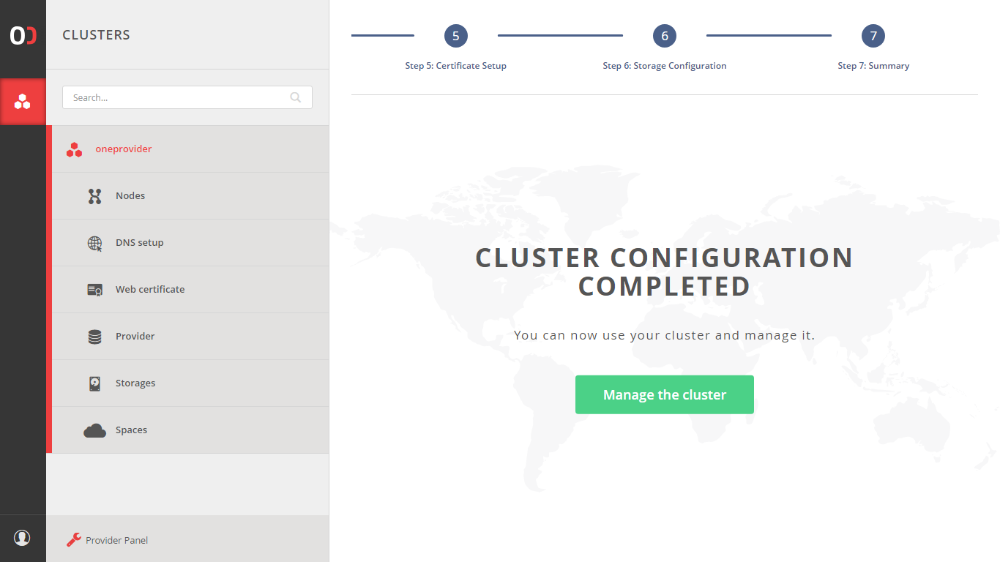
After this step succeeds, Oneprovider should be running and opening https://oneprovider-example.tk should redirect to it's Onezone login page, in this case https://onezone-example.tk.
Advanced configuration
After installation several Oneprovider parameters can be further fine-tuned using erlang application configuration files.
The basis for configuration are read-only files located at /var/lib/op_worker/app.config and /var/lib/op_panel/app.config. They can be used for reference for defaults in use and extensive comments explaining containted variables, but should not be modified.
Settings contained in the app.config files are overriden by configuration written by Onepanel during deployment in autogenerated.config files and by option custom user config file overlay.config.
The autogenerated file is located at /etc/op_worker/autogenerated.config and should not by modified by hand.
For custom configuration a new file /etc/op_worker/overlay.config or /etc/op_panel/overlay.config should be created. Variables set there will override those from app.config and autogenerated.config files.
Running
Running Docker based installation using systemd
Docker based installation can be conveniently managed using a systemd service unit. Simply create a /etc/systemd/system/oneprovider.service:
[Unit]
Description=Oneprovider Service
After=docker.service
Requires=docker.service
[Service]
ExecStartPre=/usr/bin/docker-compose -f /opt/onedata/oneprovider/docker-compose.yml down
ExecStart=/usr/bin/docker-compose -f /opt/onedata/oneprovider/docker-compose.yml up --abort-on-container-exit --no-recreate
ExecStop=-/usr/bin/docker-compose -f /opt/onedata/oneprovider/docker-compose.yml down
Restart=always
[Install]
WantedBy=multi-user.target
Then the Oneprovider service can be managed using standard systemctl command:
# Enable Oneprovider service on machine startup
$ sudo systemctl enable oneprovider.service
# Start Oneprovider service
$ sudo systemctl start oneprovider.service
$ sudo systemctl status oneprovider.service
...
May 25 23:25:32 localhost docker-compose[13499]: oneprovider-1 | Congratulations! oneprovider has been successfully started.
# Stopping Oneprovider service
$ sudo systemctl stop oneprovider.service
# Restarting Oneprovider service while keeping all persistent files
$ sudo systemctl restart oneprovider.service
# Remove Oneprovider data files
$ sudo systemctl stop oneprovider.service
$ sudo rm -rf /opt/onedata/oneprovider/persistence/*
Running package based installation
After web based Onepanel setup is complete, Oneprovider service should be operating normally. However, Oneprovider service can be manually started and stopped when needed, it is composed of several systemd units:
| Name | Purpose |
|---|---|
couchbase-server.service |
Couchbase server for Oneprovider metadata |
op_panel.service |
Onepanel administration service |
cluster_manager.service |
The process for managing a cluster Oneprovider deployment |
op_worker.service |
The main Oneprovider service |
Monitoring
Monitoring information is available on a specific port and provides basic status of all Oneprovider service functional components. The service status can be monitored using a simple script like below or using our Nagios scripts:
curl -sS https://$ONEPROVIDER_HOST/nagios | xmllint --format -
<?xml version="1.0"?>
<healthdata date="2017/05/27 22:48:16" status="ok">
<op_worker name="op_worker@oneprovider-example.com" status="ok">
<node_manager status="ok"/>
<request_dispatcher status="ok"/>
<datastore_worker status="ok"/>
<dbsync_worker status="ok"/>
<dns_worker status="ok"/>
<fslogic_deletion_worker status="ok"/>
<fslogic_worker status="ok"/>
<monitoring_worker status="ok"/>
<session_manager_worker status="ok"/>
<space_sync_worker status="ok"/>
<subscriptions_worker status="ok"/>
<tp_router status="ok"/>
<dns_listener status="ok"/>
<gui_listener status="ok"/>
<nagios_listener status="ok"/>
<protocol_listener status="ok"/>
<provider_listener status="ok"/>
<redirector_listener status="ok"/>
<rest_listener status="ok"/>
</op_worker>
</healthdata>
If all components report "ok" and overall healthdata status is also "ok", it means the service is running properly.
Logs
In case of issues, both Onepanel and Oneprovider logs should be checked and included in any reported issues.
Onepanel logs should be consulted for issues related to Oneprovider deployment, registering new storage backends or supporting spaces. Oneprovider logs should contain errors related to data management tasks and replication.
Docker based deployment
In case of Docker based deployment, assuming the paths were set as in the tutorial, the following directories contain logs:
# Onepanel logs
sudo ls /opt/onedata/oneprovider/persistence/var/log/op_panel/
cmd.log debug.log error.log info.log run_erl.log
# Oneprovider logs
sudo ls /opt/onedata/oneprovider/persistence/var/log/oz_worker/
debug.log error.log info.log run_erl.log
Package based deployment
In case of package based deployment, the following directories contain logs:
# Onepanel logs
sudo ls /var/log/op_panel/
cmd.log debug.log error.log info.log run_erl.log
# Oneprovider logs
sudo ls /var/log/op_worker/
debug.log error.log info.log run_erl.log
Enabling debug logs
By default, logs on the debug level are disabled, as they have a heavy impact on
system performance. However, there are cases when you might want to turn them
on for some time to identify problems. To do so, you need to attach to the
Erlang console of the node and execute logger:set_loglevel(debug)., like this:
~$ op_worker attach-direct
You will be attached to the console and see the following prompt:
Direct Shell: Use "Ctrl-D" to quit. "Ctrl-C" will terminate the op_worker node.
Attaching to /tmp/op_worker/erlang.pipe.1 (^D to exit)
(op_worker@node1.oneprovider.local)11>
Enter the command (the . at the end is required) and press [Enter]:
(op_worker@node1.oneprovider.local)11> logger:set_loglevel(debug).
ok
Detach from the console by pressing [Ctrl + D] - pressing [Ctrl + C] will
kill the node!
(op_worker@node1.oneprovider.local)12> [Quit]
~$
From now on, the debug logs will be written to the debug.log file as they
appear. Remember to turn off the debug logs when you are finished:
~$ op_worker attach-direct
(op_worker@node1.oneprovider.local)13> logger:set_loglevel(info).
ok
^D
You can do the same for Onepanel, just replace
op_workerwithop_panel.
Upgrading
Docker based installation
To upgrade a Docker based installation, stop the Oneprovider service using:
$ sudo systemctl stop oneprovider.service
and modify the Oneprovider Docker image version in /opt/onedata/oneprovider/docker-compose.yml:
...
node1.onezone.localhost:
# Oneprovider Docker image version
image: onedata/oneprovider:VERSION
...
and restart the service:
$ sudo systemctl start oneprovider.service
Package based installation
To upgrade Oneprovider deployment perform the following steps. In case Oneprovider is running on multiple nodes, stop the services first on all nodes, perform upgrade and then restart the services.
# Stop Oneprovider components
$ sudo systemctl stop op_panel.service
$ sudo systemctl stop op_worker.service
$ sudo systemctl stop cluster_manager.service
$ sudo systemctl stop couchbase-server.service
# Upgrade packages
$ sudo apt upgrade onezone
# Start Oneprovider components
$ sudo systemctl start couchbase-server.service
$ sudo systemctl start cluster_manager.service
$ sudo systemctl start op_panel.service
$ sudo systemctl start op_worker.service
Typical administration tasks
This section presents few typical administration tasks that can be performed by Oneprovider admins.
Change administrator password
The administrator password to the Oneprovider administration panel can be changed easily within GUI (https://$ONEPROVIDER_HOST:9443) or using the REST API:
curl -sS -X PATCH -H 'Content-type: application/json' \
-d '{"username": "admin", "password": "NewPassword"}' -u admin:password \
https://$ONEPROVIDER_HOST:9443/api/v3/onepanel/users
Adding new storage to Oneprovider
Storage resources can be conveniently added to a Oneprovider instance using the Onepanel GUI, in menu Storages and click Add storage in the top right corner:
- Select storage type and provider required connection details (example for S3):
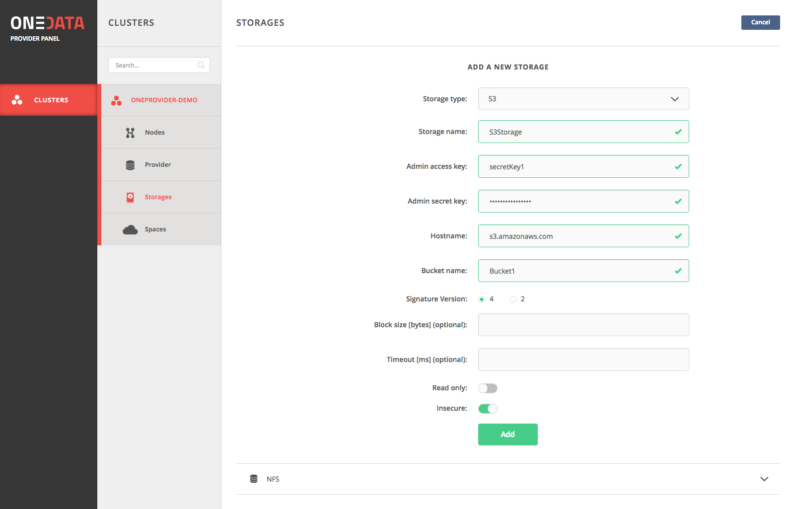
From this point on when supporting user spaces, this storage will be available as an option. You can read more about storage configuration here.
Support user spaces with storage
The only way users can use the Oneprovider storage resources is by requesting storage support from Oneprovider administrator, by sending them Space support tokens created in the Onezone user interface.
Using the token, the administrator can support the space on a specific storage using the web interface:
- Select storage type, paste support token received from user and specify storage quota for the user:
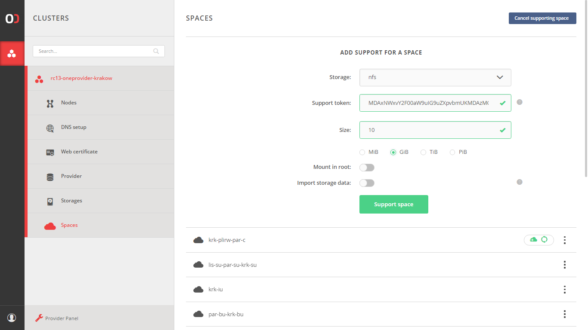
Add storage with existing data
Oneprovider supports direct import of legacy storage data - without the need of copying the data. You can learn more in the storage import section.